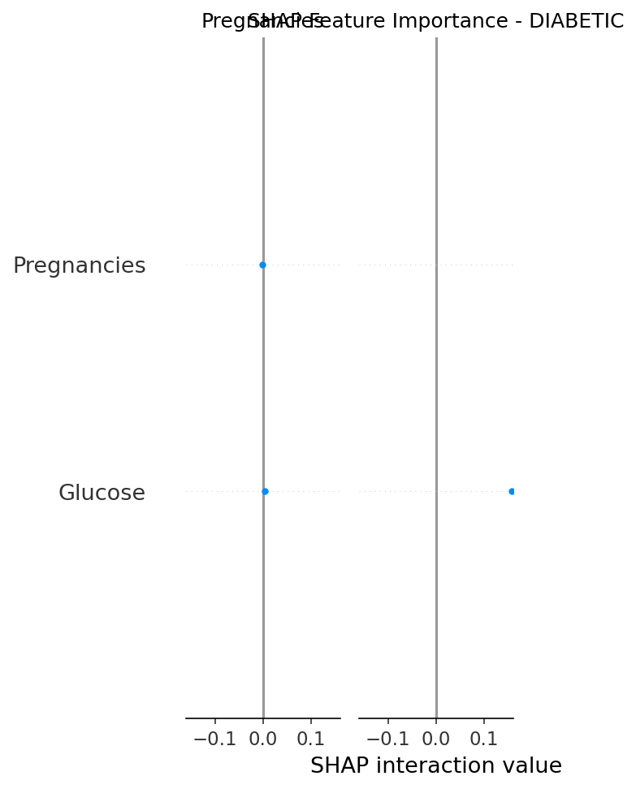

Diagnosis: DIABETIC
Confidence: 90.0%
| Feature | Value | SHAP Impact | Risk Level |
|---|---|---|---|
| BloodPressure | 72.0 | -0.158 | PROTECTIVE |
| SkinThickness | 35.0 | +0.158 | HIGH RISK |
| Age | 50.0 | +0.024 | HIGH RISK |
| DiabetesPedigreeFunction | 0.627 | -0.024 | PROTECTIVE |
| BMI | 33.6 | +0.017 | HIGH RISK |
| Insulin | 0.0 | -0.017 | PROTECTIVE |
| Glucose | 148.0 | +0.001 | NEUTRAL |
| Pregnancies | 6.0 | -0.001 | NEUTRAL |

SHAP values show exactly how much each feature contributed to the prediction. Positive values increase diabetes risk, negative values decrease it.